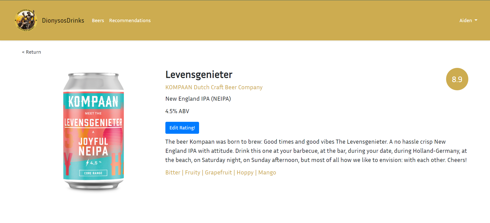
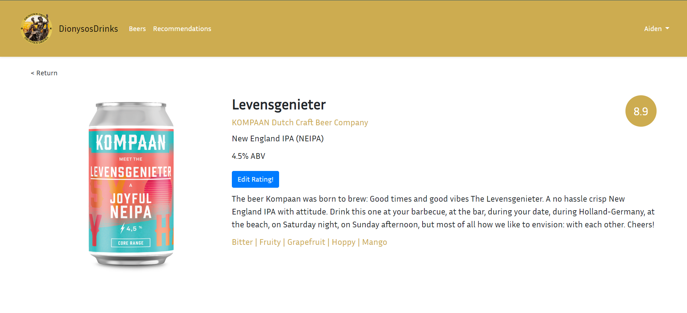

Dionysos Drinks
Dionysos Drinks is a web application designed to make choosing your next alcoholic drink effortless. Users can rate drinks they have tried, either overall or based on specific flavor notes, and the app provides personalized recommendations tailored to their tastes.
The platform allows users to explore drinks through a browse tab with multiple categories, give feedback on recommendations, and receive suggestions filtered by flavor profiles such as sweet or bitter. Because Dionysos Drinks is a web app, it works across devices -including Android and iOS phones, Windows and Linux laptops, or even smart fridges -making it universally accesible.

 

Project Context
The problem addressed by Dionysos Drinks is that many people struggle to choose an alcoholic drink from the overwhelming variety available. The project was a self-initated web app, aiming to help users avoid picking drinks they might dislike. Using a rating-based algorithm, the app generates recommendations for each user based on their previous ratings, improving discovery and enjoyment of new beverages.
My Role
I independently developed Dionysos Drinks as a fully functional web app. I designed and implemented the algorithm that genrates personalized drink recommendations based on user ratings. I also handled the full front-end development, including browsing, rating interfaces, and the recommendation dashboard, ensuring the app is responsive and works across different devices. Additionally, I designed the user experience, integrated feedback mechanisms, and managed the project from concept to web app.